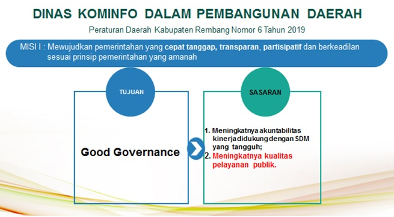
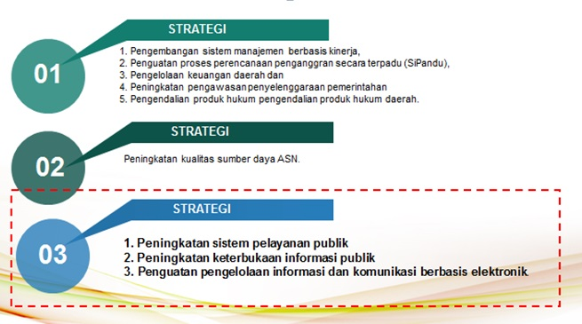

Dinas Komunikasi dan Informatika (Kominfo) Kabupaten Rembang merupakan Organisasi Pemerintah Daerah (OPD) yang berdasarkan Undang-Undang Nomor 23 Tahun 2014 tentang Pemerintahan Daerah dan Peraturan Daerah Kabupaten Rembang Nomor 6 Tahun 2021 tentang Pembentukan dan Susunan Perangkat Daerah Kabupaten Rembang mengampu tiga urusan yaitu : Urusan Komunikasi dan Informatika, Statistik dan Persandian. Dinas Kominfo Kabupaten Rembang merupakan dinas tipe B dimana dalam struktur organisasinya terdiri dari 1 sekretariat dan 3 bidang. Bidang pertama adalah Pengelolaan Informasi dan Komunikasi (PIKP) yang menangani urusan kominfo yang terkait publikasi dan kehumasan, bidang kedua adalah Tata Kelola dan Layanan Informatika yang menangani urusan kominfo dalam hal pengelolaan Sistem Pemerintahan Berbasis Ekeltronik (SPBE) dan . Bidang Statistik dan Persandian serta urusan statistik dan persandian.
Dalam melaksanakan tugasnya Dinas Kominfo Kabupaten Rembang didukung sumberdaya manusia baik PNS dan Non PNS. Jumlah personel untuk mendukung kelancaran pelaksanaan tugas dan fungsi Dinas, Komunikasi dan Informatika Kabupaten Rembang Tahun 2022 adalah sebanyak 33 orang dengan perincian sebagai berikut :
Jumlah Pegawai berdasarkan jenjang pendidikan formal :- Pendidikan Pasca Sarjana : 7 Orang
- Pendidikan Sarjana : 18 Orang
- Pendidikan D 4 : - Orang
- Pendidikan D 3 : - Orang
- Pendidikan SMA : 7 Orang
- Pendidikan SMP : 1 Orang
- Golongan IV : 5 Orang
- Golongan III : 22 Orang
- Golongan II : 5 Orang
- Golongan I : 1 Orang
- Non PNS : 14 Orang
Berdasarkan Dokumen Rencana Pembangunan Menengah Daerah (RPJMD) 2016-2021 dimana tercantum Visi dan Misi Bupati dan Wakil Bupati Rembang bahwa Dinas Kominfo ikut berkontribusi kepada pencapaian Misi Pertama (1) yang berbunyi : MISI I : Mewujudkan pemerintahan yang cepat tanggap, transparan, partisipatif dan berkeadilan sesuai prinsip pemerintahan yang amanah. Lebih lanjut dari misi tersebut diuraikan kedalam tujuan dan sasaran dimana muaranya adalah kualitas layanan publik sebagaimana dalam diagram berikut :
Berdasarkan tujuan dan sasaran tersebut daerah menyusun strategi-strategi yang nantinya terdistribusi ke dalam beberapa OPD termasuk Dinas Kominfo Kabupaten Rembang. Strategi daerah yang menjadi domain Dinas Kominfo adalah strategi nomor 3 sebagaimana gambar berikut :
